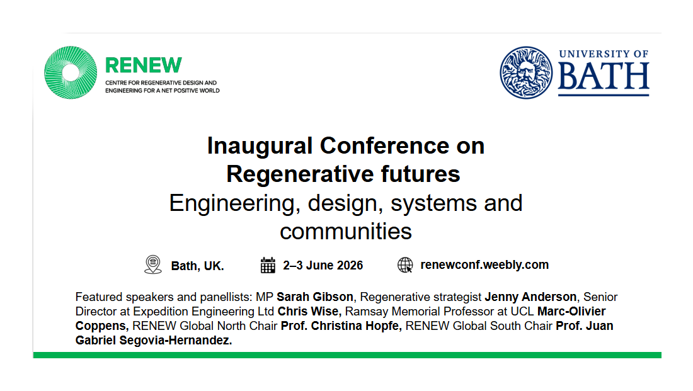

RENEW 2026 — Inaugural Conference on Regenerative Futures
University of Bath, Bath, UK
The Centre for Regenerative Design & Engineering (RENEW) at the University of Bath is hosting its inaugural conference on Regenerative Futures: Engineering, Design, Systems and Communities on 2–3 June 2026. The conference brings together scholars, practitioners, and policymakers to debate and advance regenerative design and engineering with societal, cultural, ecological, and economic co-impact.
Featured speakers include MP Sarah Gibson, regenerative strategist Jenny Anderson, Chris Wise (Expedition Engineering), and leading academics from UCL, RENEW, and partner institutions. Participants are invited to submit extended abstracts rather than full papers, with an emphasis on debate, curated talks, and active engagement.
- Final abstract deadline: 30 April 2026
- Registration deadline: 1 May 2026
- Conference dates: 2–3 June 2026